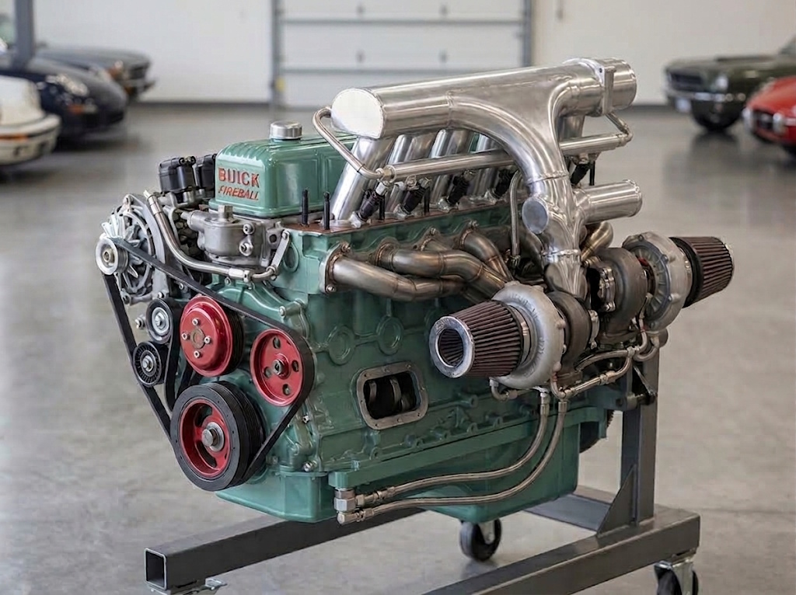

paint.net. It stands as the early digital baseline for stretching the '39 Buick body over the Fireball straight-eight package before migrating to AI-driven rendering workflows.
Target Concept • 700 HP Touring Supercar & Chassis Blueprint
Every absurdity requires a catalyst. In this instance, the motivation wasn't selecting a vehicle and finding a motor—it was staring at the heavy, cast-nickel iron architecture of a 1936–1952 Buick 320 Fireball straight-eight engine and asking the immediate, unavoidable question: What happens if we slap two turbos onto 34.5 inches of cast-iron inline arrogance?
Once you commit to housing almost three feet of boost-fed iron, standard packaging goes out the window. The solution is stretching a 1939 Buick Business Coupe body directly over a custom chassis—stretching the front clip and axle line forward to create an unashamedly dramatic touring supercar silhouette. Power transfers through a modern 10-speed automatic into an independent rear suspension (IRS) setup to ensure this long-nose missile stays planted when all 700 torque-heavy horses hit the pavement.
This build sits comfortably on the razor-thin boundary between genuine engineering feasibility and self-inflicted fiscal ruin. It is expensive enough, specialized enough, and mechanically stubborn enough to get pushed to the bottom of the queue indefinitely. But in the statistically improbable event of a lottery win—or should an eccentric billionaire stumble across this grid with more money than sense—this is the exact "this-because-that" blueprint to bring it to life.

Note on Engine Rendering: The twin-turbo Fireball 320 image above is an early AI visualization. While it contains a few classic AI architectural artifacts, it accurately conveys the overall packaging scale and dual-boosted straight-eight engine layout.